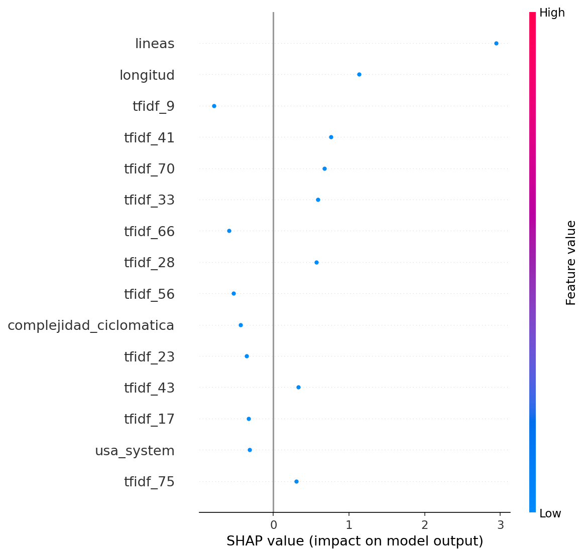
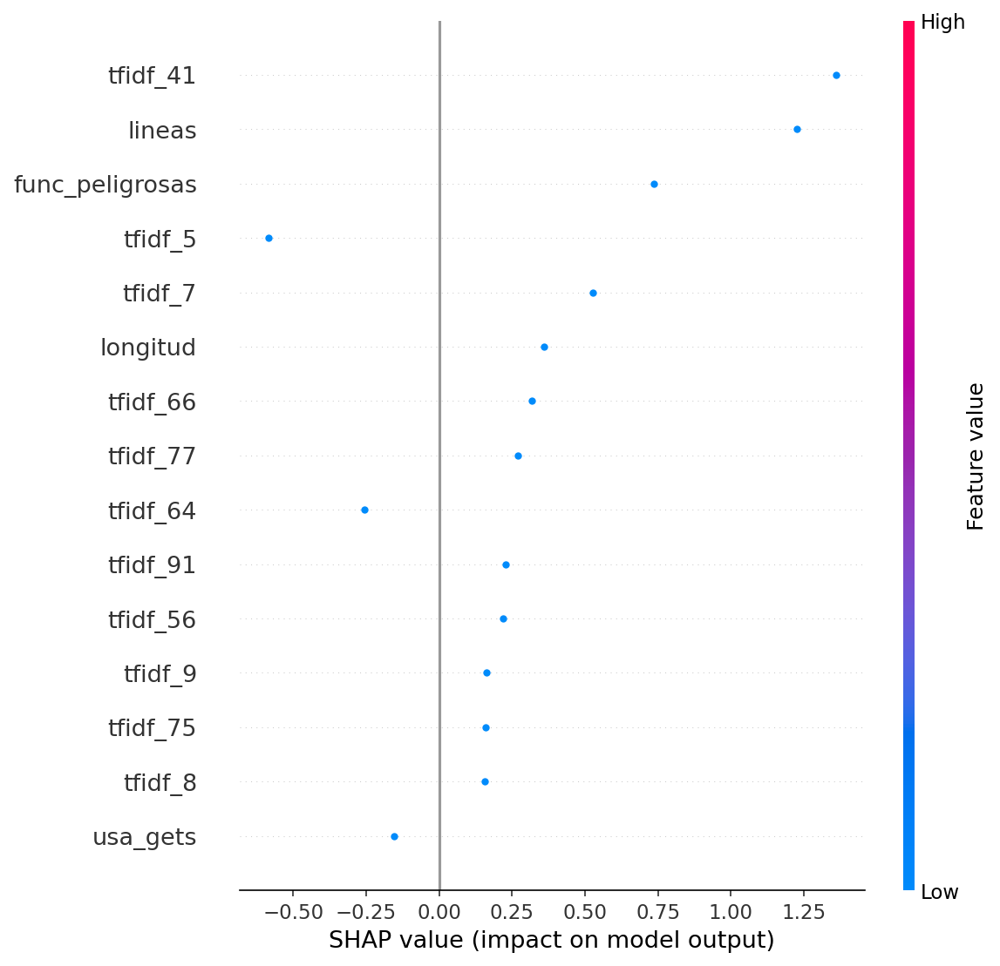
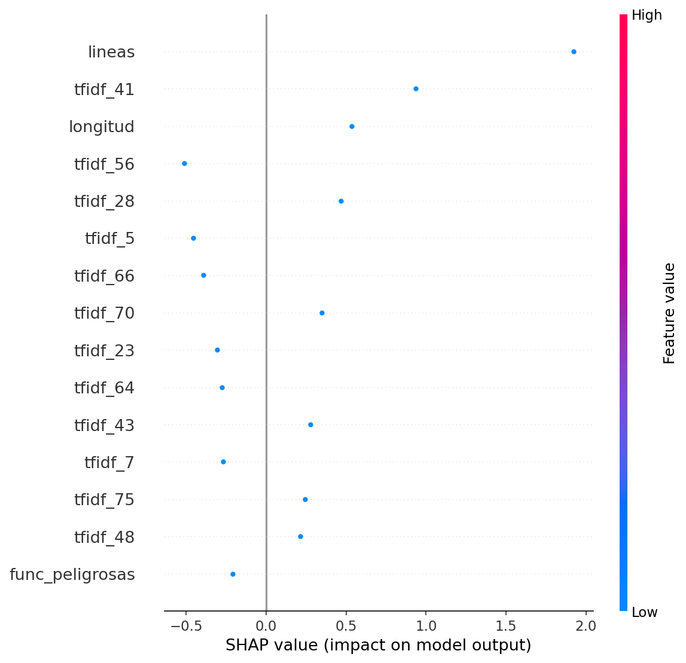

Análisis de Vulnerabilidades - Pipeline CI/CD
Generado: 2025-12-09 11:27:51

Este gráfico muestra las características del código que más influyeron en la predicción. Las barras rojas aumentan la probabilidad de vulnerabilidad, las azules la disminuyen.

Este gráfico muestra las características del código que más influyeron en la predicción. Las barras rojas aumentan la probabilidad de vulnerabilidad, las azules la disminuyen.

Este gráfico muestra las características del código que más influyeron en la predicción. Las barras rojas aumentan la probabilidad de vulnerabilidad, las azules la disminuyen.